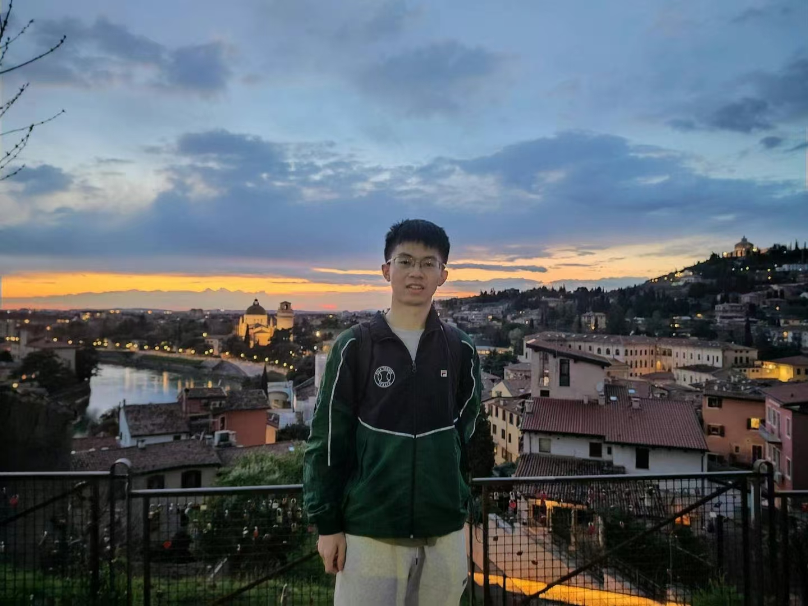

|  |
About MeI am an incoming PhD student at the MIT Center for Computational Science and Engineering (CCSE). I received my B.S. degree from the School of Mathematical Sciences, Peking University in 2025, with a major in applied and computational mathematics. |
My research interests broadly cover optimization and theory of computation.
During my undergraduate studies, I was fortunate to learn from excellent mentors in various fields, including Professor Ying Cui, Zaiwen Wen, and Sihong Shao, who helped me shape and clarify my research interests in computation theory.
An Online Adaptive Sampling Algorithm for Stochastic Difference-of-convex Optimization with Time-varying Distributions
Yuhan Ye, Ying Cui, Jingyi Wang
ICML 2025, oral. [pdf]
Feel free to reach out to me at:
I like playing chess, while I am struggling to improve my ELO on chess.com. I also play other strategy games.